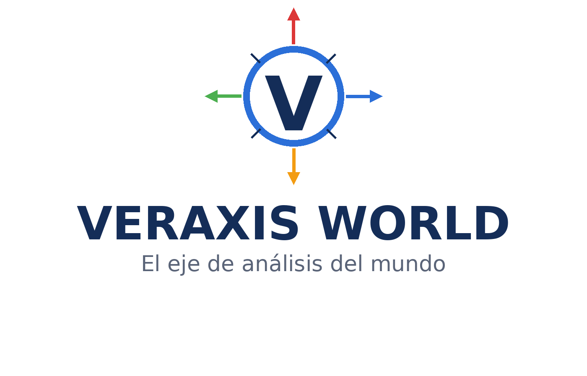

VERAXIS WORLD
El eje de análisis del mundo
Veraxis World es una plataforma global dedicada al análisis de los
principales sistemas que influyen en el mundo contemporáneo: geopolítica,
economía, innovación tecnológica y dinámicas globales.
El proyecto se encuentra actualmente en desarrollo.